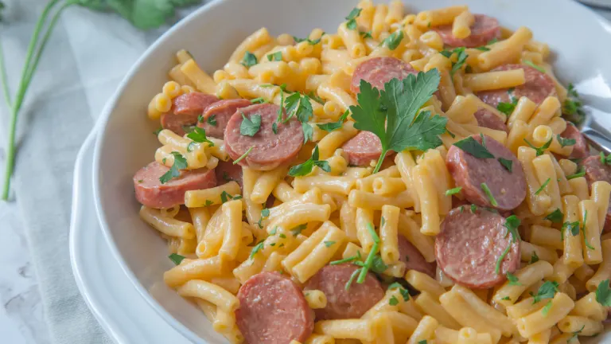

Aaron's Delectable Hotdog Mac and Cheese

One of Aaron's go-to quick meals is this delicious mac and cheese hotdog combo!
The flavors of orriginal Kraft mac and cheese partnered with premium 100% beef
hotdogs is to die for. This is a perfect quick meal after getting off of work or
home from school. This recipe is so easy that even children can make it for themselves!
Ingredients
- 1 Box Kraft Mac and Cheese
- 3 100% All Beef Premium Hotdogs
- 1/4 Cup Milk
- 1 3/4 Cup Water
- 4 Tablespoons Butter
- 1 Stem Cilantro
- Pepper to Taste
Steps
- Bring a pot of water to a boil and cook the pasta for
8 minutes.
- While the water is boiling and pasta is cooking, cut
the hotdogs into dimes and cook with a little oil in
a pan on the stovetop untill slightly crisp and brown.
- Once pasta is done cooking, strain the water, add the
butter, milk, and kraft cheese mix and mix well.
- Chop the cilantro and add both the hotdog dimes and
cilantro to the mac and cheese and mix.
- Add pepper to taste (optional).
Back to Top
Back to Odins Recipes